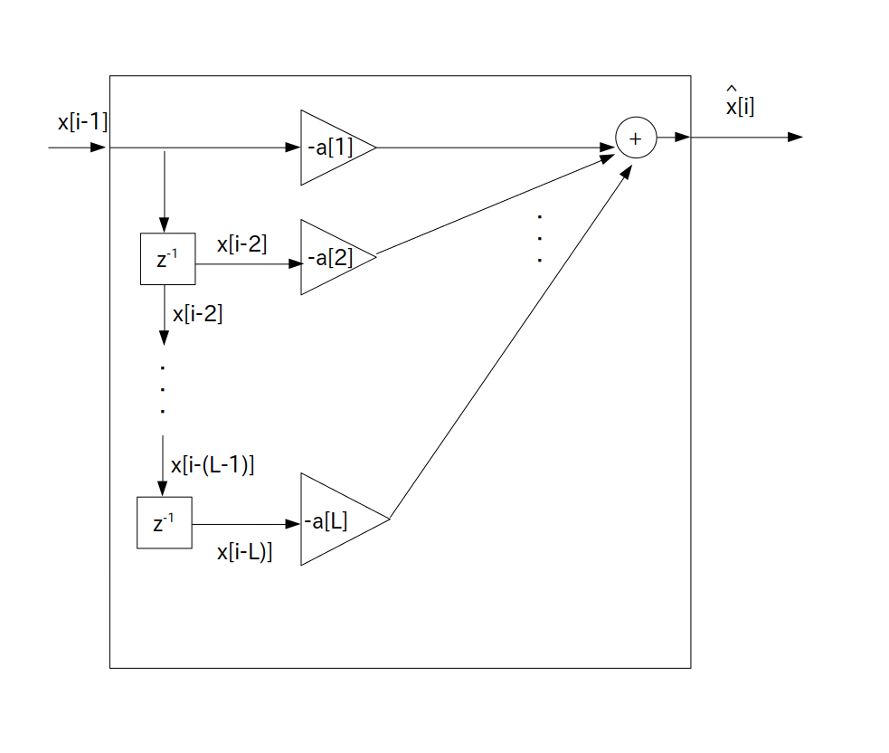

ある信号列 $x[i]$ が L 次自己回帰モデルから生成されていることが分かっているとします。
ただし次数 L や LPC 係数 $a[n]$ は既知であるとします。
さらに時刻 $i$ において $x[i-1]$ まで観測した値を既に入手済とします。
この入手済の観測値のことを実現値と呼びます。
※ $x[i]$ は確率変数なので新しい信号列を生成する度に異なる実現値が出てくることに注意
すると時刻 $i$ において $x[i]$ の値は過去の実現値を用いて次の式で予測出来ます。
この式を L 次線形予測モデル、予測した値を線形予測値と言います。
次数 $\textrm{L}$ を正の整数とする
$x[i]$ は L 次自己回帰モデルに従って生成されている
$x[i-1]$ まで実現値を入手済みとする
$\hat{x}[i]$ ・・・ $x[i]$ の線形予測値
$a[n]$ ・・・ LPC 係数
L 次線形予測モデルは形式上は L 次自己回帰モデルからホワイトノイズの項である $e[i]$ を取り除いた形、つまり
\[ \hat{x}[i] = x[i] - e[i] \]となっていることに注目して下さい。
さて L 次線形予測モデルは次のブロック図で表されます。

要するに $x[i-1]$ を入力すると次の時刻の信号値 $x[i]$ の線形予測値 $\hat{x}[i]$ が出力されるFIR フィルタとなります。
よってプログラム表現は次の通りになります。
実現値 $x[i]$ は時刻 i が負の時は 0 とする
hat_x[i] = 0 ; for( int n = 1; n <= L; ++n ) hat_x[i] += -a[n] * x[i-n] ; // a[n]の符号注意